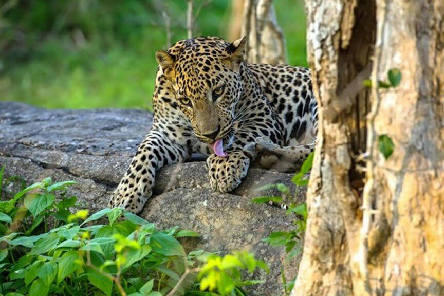
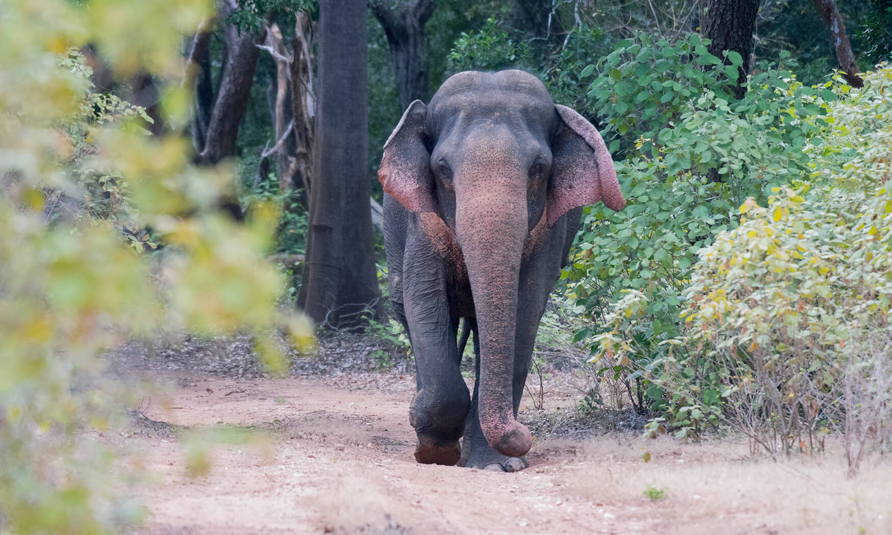
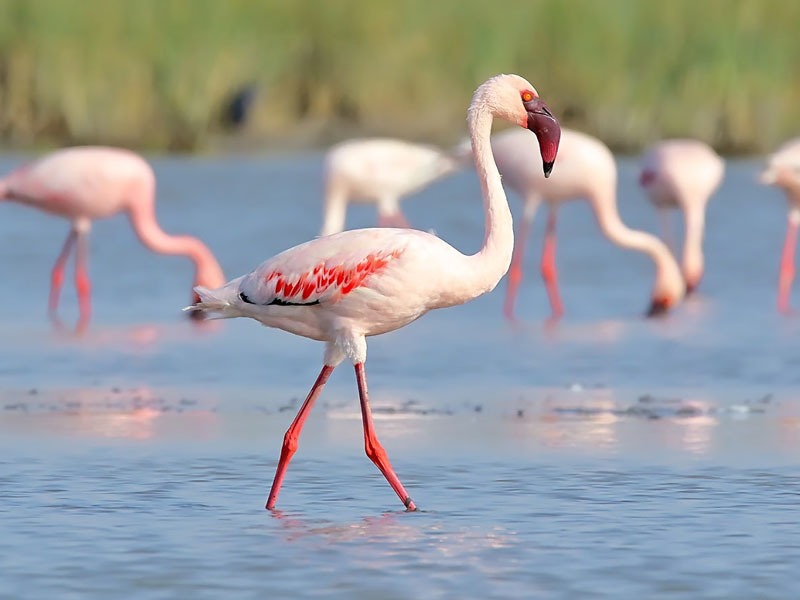
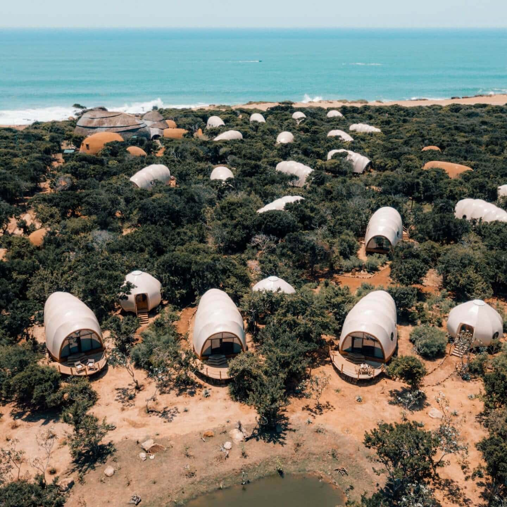

Key Attractions

Leopard spotting on early morning safaris.

Elephants roaming in their natural habitat.

Jeep safaris exploring wildlife and scenic landscapes.

Diverse bird species for birdwatchers and photographers.

Beautiful coastal views for photography and sunset watching.